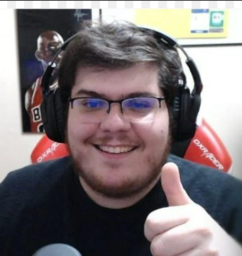
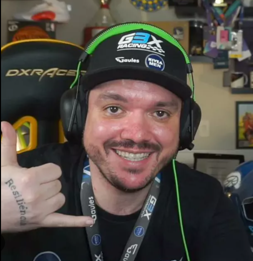

História
Um pouco sobre a Twitch!
A Twitch é uma das maiores plataformas de streaming de vídeo do mundo,
voltada principalmente para transmissão de jogos eletrônicos, mas que
também abrange outras áreas de entretenimento, como música, talk shows,
e recentemente a categoria "Just Chatting", onde os streamers interagem
com o público sem um tema específico.
Streamers Brasileiros
Dentre inumeros streamers, destacam se:
Casimiro "Cazé" Miguel (CazéTV): Popular pelas transmissões ao vivo de futebol e eventos esportivos, ele domina em termos de horas assistidas, acumulando mais de 110 milhões de horas no primeiro trimestre de 2024. Além da Twitch, ele também faz sucesso no YouTube.

Link direto para o canal:
CasimiroGaules:
Outro nome de peso, com mais de 37 milhões de horas assistidas,
Gaules é um veterano das streams de e-sports, especialmente
com foco em CS, e também transmite conteúdos variados e eventos ao vivo.

Link direto para o canal:
GaulesAlanzoka "Alan Ferreira":
É um dos maiores e mais influentes streamers brasileiros na Twitch.
Conhecido por seu carisma e humor, Alanzoka conquistou uma grande
base de fãs e se destaca especialmente na comunidade de jogos.
Link direto para o canal:
AlanzokaCuriosidades Sobre a Twitch
Apesar de ser um destaque recente, o serviço já tem 10 anos de existência:
a Twitch surgiu em 2011, logo após o fim da Justin.TV. Outro fato curioso
é que a plataforma quase tornou-se "irmã" do YouTube, caso o Google
tivesse finalizado sua compra.